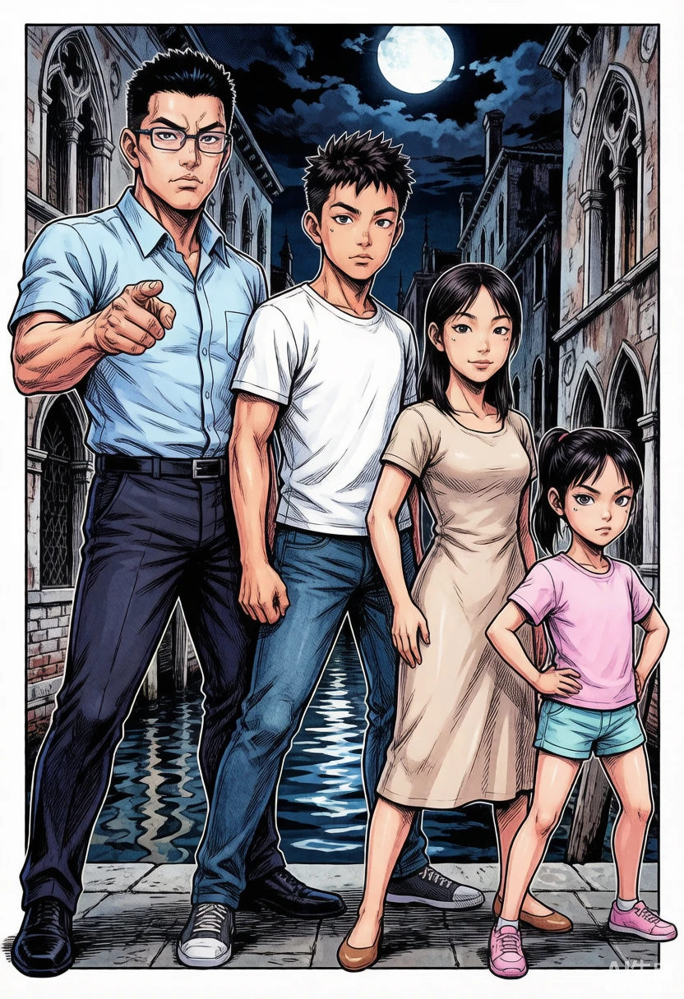
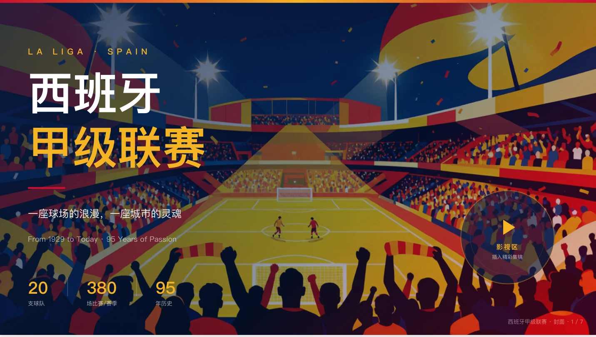
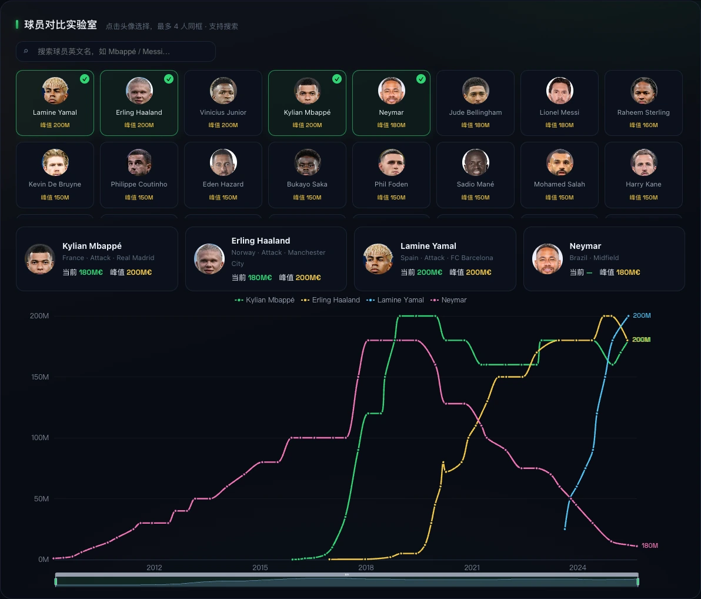

03 / LITERATURE REIMAGINED
如果来到盖茨海德的，
是保尔呢？
让《钢铁是怎样炼成的》中的保尔走进《简·爱》的世界。同样的遭遇，遇上不同的性格，会发生怎样的故事？
钢铁少年
他不擅长用语言反击，
却总想用行动回应。
从寄人篱下，到洛伍德学校；从愤怒与冲突，到友谊、失去和重新出发。用文字与连续分镜，探索人物性格如何推动情节。
阅读图文故事 ↗含完整故事、15 幅分镜和原始分镜说明。
当前分享提供的是图文作品。


IDEAS INTO REALITY ↗01—04 / SELECTED WORKS01 / IMAGE EXPLORATION
把四位家人放进同一个画面，再探索照片与漫画之间的变化。创作中反复调整身高、服装、五官和面部线条，寻找想要的视觉表达。
三张为分享记录中的最后一组漫画版本。点击图片可放大查看。
02 / FOOTBALL & CULTURE
用 7 页演示介绍西班牙甲级联赛。从历史与赛制，到俱乐部、城市和观赛体验，让不熟悉足球的人也能找到感兴趣的入口。
展示原作的 7 页画面，内容沿用原作赛季口径；封面“影视区”为原作中的视频占位，未提供可播放视频。
查看原始创作记录 ↗03 / LITERATURE REIMAGINED
让《钢铁是怎样炼成的》中的保尔走进《简·爱》的世界。同样的遭遇，遇上不同的性格，会发生怎样的故事？
钢铁少年
从寄人篱下，到洛伍德学校；从愤怒与冲突，到友谊、失去和重新出发。用文字与连续分镜，探索人物性格如何推动情节。
阅读图文故事 ↗含完整故事、15 幅分镜和原始分镜说明。
当前分享提供的是图文作品。
04 / DATA, MADE EXPLORABLE
把足球身价与转会记录做成可以操作的网页。从球员、联赛到全球资金流，尝试用交互图表讲清复杂的数据关系。

进入交互作品 ↗试一试：搜索球员 → 点击头像进行对比 → 切换联赛视角。
打开数据可视化 ↗保留原作数据与图表。源文件中的身价快照截至 2025-06-17，不代表今日实时数据；头像已保存到本地。
查看原始创作记录 ↗MORE CREATIONS / 补充作业
迷宫探索、魔方训练、动画短片与太空游戏。